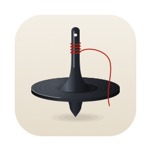

Ariadne
Pomodoro planner for the macOS menu bar
Paste your task list. Get a day of pomodoros.
Copy tasks from anywhere — Notes, Notion, an email — and Ariadne lays them out into focused intervals with breaks, right in your menu bar. Drag to reorder, see when the day ends, and keep going.
With Pro, ask an AI agent like Claude, GitHub Copilot or Cursor to plan your day: the tasks land in Ariadne for you to confirm. Everything stays on your Mac.